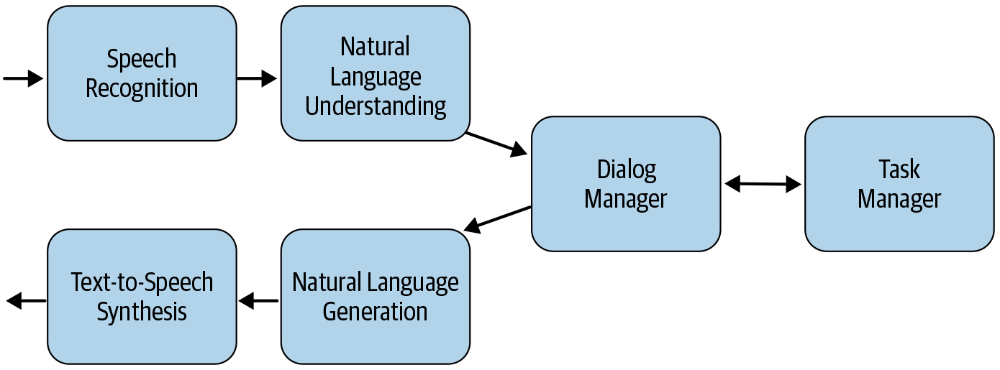
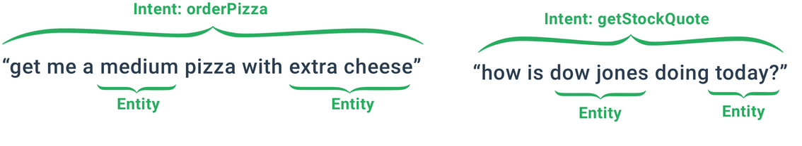

12.2 Basic Components of a Chatbot
NLU, dialogue state, and how a reply is chosen.
These notes walk through the lecture slides. The original deck is unchanged; use (slides) on the course hub if you want that PDF.
1. A pipeline, not a single model
Weeks 6–11 gave you classification and entity detection. A dialog system uses both, plus a piece that decides what to say next.

Four blocks, in order:
Speech recognition. If the channel is voice, turn audio into text. Production systems use a strong speech-to-text model. Text chat skips this block.
Natural language understanding (NLU). Analyze the transcript: intent, entities, sentiment, coreference. This is the NLP you already know, aimed at one utterance in a conversation.
Dialog and task manager. Decide what matters, what is still missing, and which action to take. This module owns the flow. It is not a classifier.
Natural language generation (NLG). Turn that decision into words. Templates are common. A learned generator is possible if you have the data and can live with the risk.
2. Why the manager is the product
NLU can be swapped. The manager is where the business rules live.
A pizza bot that understands large and pepperoni but forgets them on the next turn is a failed product. The manager stores the order, asks for the missing slot, and only then calls payment.
When something goes wrong in production, ask which block failed. Wrong transcript is speech. Wrong intent is NLU. Asking for toppings twice is the manager. A grammatically pretty but useless reply is NLG.
3. The vocabulary
People who build bots share a small ontology.
| Term | Meaning |
|---|---|
| Dialog act / intent | What the user is trying to do on this turn (order_pizza, yes_no_question) |
| Slot | A typed hole attached to that intent (size, topping, address) |
| Value | What filled the slot in the utterance (large, pepperoni) |
| Entity | Often the slot–value pair taken together |
| Dialog state | Current intent plus the slot–value map |
| Context | The state plus history: earlier states, not only this turn |
Sentiment and other labels are sometimes hung on the intent. The intent is still the primary descriptor in classical systems.

Read a pizza turn as: intent order_pizza, slots size=large, topping=pepperoni. The next turn may add address without repeating the toppings. That only works if the state persists.
4. Templates vs generators
NLG has two honest designs.
Templates. "I have a {size} pizza with {toppings}. Is that all?" Safe, testable, on-brand. Use this for anything that can charge a card or give medical or legal information.
Learned generation. A model maps dialog state to a sentence. More fluent. Harder to constrain. Fine for chitchat; risky for goal-oriented flows unless you add a filter.
Most industry stacks are template NLG plus a learned NLU. That split is a feature.
5. What this week is for
By the end of note 12.2 you should be able to:
- name the four pipeline blocks and what each one owns
- define intent, slot, value, and dialog state
- say why a correct NLU and a broken manager still fail the user
Note 12.3 zooms in on intent classification, slot filling, and how responses are chosen.
6. Practice
-
A user says "the same as last time, but no olives." Which pipeline block has to remember "last time"?
-
Write intent, slots, and values for "Book me a table for two at 7 at Luigi's."
-
Why might you keep template NLG even after you replace NLU with a large language model?